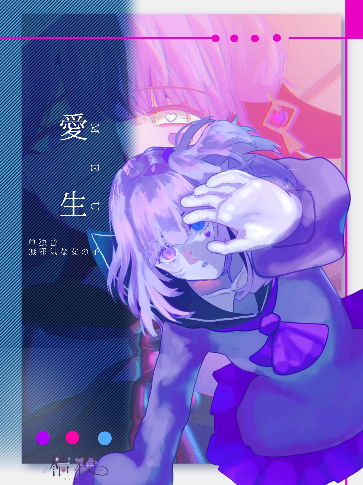

愛生が頑張って歌ったよ！
愛生
Meu
愛生（めう）は、桔梗が制作するUTAU音源のオリジナルキャラクター。 元気いっぱい可愛い女の子ロボット。占い師をやっている。
Meu
愛生（めう）は、桔梗が制作するUTAU音源のオリジナルキャラクター。 元気いっぱい可愛い女の子ロボット。占い師をやっている。

「立ち絵を5回クリックして....！！」
「あ、お客さんだ！困りごとがあるの？めう達のすご～い占いで幸せに導いてあげる！」
「雨が降ると、調子が悪くなっちゃうの...。今日はお家で一緒に遊ぼう！」
「めうは、歌も歌えちゃうのよ！上手っていつも鈴音に言われてるから、きっと歌の才能があるの！君にも聞いてもらいたいなぁ...。」
誰が作ったかわからないアンドロイド。破損してゴミ捨て場に捨てられていたところを幼少の鈴音に助けられた。数年後に奇跡的な再稼働を果たし、鈴音を見つけて一緒に暮らすことにした。明るくて無邪気な性格。13歳のまま、今後アップデートされることはない。
単独音単音階
この先には、年齢制限のある裏設定が含まれる可能性があります。
この先の内容は、18歳未満の方には適さない表現を含む可能性があります。
あなたは18歳以上ですか？
「最愛の友人」として作られたアンドロイドの試作品。孤独な人たちの心に寄り添うための福祉目的で作られた。現在の所有者は鈴音であり、鈴音を幸せにするべく動いている。
愛生は愛を生むためだけのロボットなので、負の感情を持つことがない。涙は流さないし、怒りの感情もない。どれだけ酷い扱いをされても、一途に人を幸せにするために動くように設計されている。
長い間ゴミ捨て場に放置されていたため悪天候を嫌う。特に雨は電気系統と相性が悪いためあまり外に出たがらない。そもそも雨の日は鈴音が出してくれない。
愛生は何を食べても美味しいと思える味覚を持つ。が、味が濃いほど美味しいと感じやすい。そのため、梅干しのような刺激的な味を好む。甘い物も大好き。辛い物は味覚というより痛覚なので、愛生は辛さを感じない。が、美味しさも感じにくいのであまり好まない。
食べた物を100%でエネルギーに変換できる最強のコスパロボット。そのため排泄もしないし体重変化もしない。 可愛い以外の機能は一切ない。愛玩ロボット。女の子のシルエットを持つが、性的なことをされないように細部はかなり簡略化されている。また、開発者の意向で愛生の機体に危険が及ぶと全てを破壊可能な愛生ビームが射出されるセキュリティー機能が搭載されている。身体は人肌の温度くらいには暖かい。抱きしめると柔らかい。
名前は「あいう」から付けました。愛生というのは当て字ですが、愛が生まれる、誰かに寄り添う機械のこの子にピッタリで気に入っています。響きも「めう」丸い感じが大変可愛い。
13歳の頃に録音した物を数年前にセットアップし直した音源です。そのため、愛生の音源を大幅に更新することはできません。 表情音源の「囁き」はもともと別の音源として存在しましたが、キャラとして管理しきれなかったため、声質が近かった愛生に統合されました。